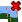
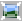

Hugin Fast Preview window
Contents |
Distinction
Like the more accurate Hugin Preview window, the fast preview shows something similar to the final stitched output, but with a few important differences:
- The window features a row of tabs at the top, clicking on a tab switches between modes that allow you to interact with the panorama in different ways.
- Reduced resolution input images are used, so some areas can appear blurred that will be sharp in the final output.
- Seams are not created, images are simply overlaid with the first image at the bottom of the stack and the last at the top.
- Blending by a tool such as enblend isn't shown.
- The brightness display of HDR and 16bit images is controlled by settings in the hugin Preferences, these settings are not used when stitching. The colouring of these images will also be inaccurate when using exposure or white balance correction. For HDR panoramas, the Hugin Preview window is recommended instead.
- Only the first photo from each stack is visible (the others are hidden behind), if you want to see the combined stack then use the HDR mode of the Hugin Preview window instead.
- Photometric correction only includes white balance and exposure, unless full photometric correction is enabled with the the Photometrics button.
- The remappings are approximate, the output by a tool such as nona is more accurate. If this concerns you more than speed, use the Hugin Preview window instead.
- It's much faster ;-)
General features
Overview
The Overview introduced in Hugin 2011.0 represents an interactive preview of the panorama.
Just click the button 'Show/Hide' to toggle the display the docked Overview window. Zoom it by dragging the handle located at the center of the border to the preview canvas.
The 'Grid' checkbox can be used to toggle the grid overlay in both overview and the preview canvas.
Clicking the small pin icon in the header of the docked Overview area (or dragging the Overview title bar) will switch to a floating window instead. To put that floating window back in a docked position just drag it in either the top, bottom, left or right boundary of the preview's actual image area.
The default mode is a Panosphere to display typical panoramas and can be used to e.g. easily check for errors in the nadir or zenith regions.
Displayed images
Every input image in the preview has toggle button where display can be disabled or enabled.
In addition, this display also controls the behaviour of the hugin Optimizer tab and the hugin Stitcher tab - Any photos disabled here are not used in optimisation or stitching.
 All
All
By default all input images are shown in the preview, however individual images can be enabled and disabled in the Displayed images section. Use the All button to return to the default and display all the images.
 None
None
Similarly, hide all images with the None button, use this if you want to enable preview images one by one.
Preview canvas
The image window itself shows a representation of the final stitched output panorama, use the scroll bars to change the horizontal and vertical Field of View.
To toggle the grid use the checkbox Grid in the Overview window.
Preview tab
 Identify
Identify
Using this tool you can find where your images are, and match them to their number. You can also edit control points.
Move the mouse over the visibility buttons for the images (the numbers at the top of the preview) and the corresponding image lights up red in the preview. When this tool is turned on, moving the mouse over the panorama highlights all the images under the mouse in different colours. The buttons for those images lights up in matching colours. The same can be achieved when holding the Control key and moving the mouse over the panorama.
When the mouse is on the overlap of two images, click to edit the control points between those images.
Photometrics
Enables full photometric correction. When turned on, this will cause significant delay when changing photometric parameters. It also takes a while to turn on and off. However, with it enabled you get much better representation of the colours in the output. With it turned off, you get correction only for exposure and white balance. With it turned on, you also get vignetting and colour response correction. The Hugin Preview window does all these things by default, so you may wish to use that instead.
 Show control points
When this tool is turned on, all Control points are drawn as lines with crosses at each end. Green, yellow, orange, and red lines and their crosses indicate 'normal' control points. A red control point is misaligned (the ends of the line are father apart), and a green control point is well aligned (the ends of the line are almost in the same position). Blue indicates horizontal control points, vertical control points or straight line control points.
Blend mode
The normal blend mode will draw the images with the first photos in the project above later photos as this approximates the order that blending is performed.. The difference blend mode will do the same, except the image under the mouse pointer will be subtracted from the rest of the stack. Use this to determine if the alignment went well: where you can see edges in the subtracted image, these edges are misaligned. Be warned that this isn't fully accurate, the other preview has a better difference mode.
EV
EV stands for Exposure Value, clicking the Reset button will set it to the average of all the input image exposures or setting it to 0 (zero) will result in no exposure change being applied to the panorama (note that unless all the photos also have their individual EV set to zero in the Hugin Camera and Lens tab they will likely appear incredibly bright or dark).
EV is a standard photographic scale, each increase or decrease by one unit will change the exposure by the equivalent of one f-stop (ie. halving or doubling the exposure). It is worth adjusting the exposure here in hugin rather than later in an external image editor, since hugin uses the camera response curve calculated in the hugin Exposure tab to perform the correction in a linear colour space.
The average value isn't always wanted. If you see colour artefacts in bright sky areas, set this to the negative of the darkest input image - This has a side-effect of clipping brighter images.
Grey Picker
Hugin can align the white balance (w:Color balance) of the photos in the panorama to match that of the anchor photo, this is done when optimising White Balance in the Hugin Exposure tab or when you use the Align... button in the Hugin Assistant tab - Usually this anchor is the first photo in the project, but it can be changed using anchor this image for exposure in the Hugin Images tab.
However, often the first photo, or even none of the photos, in the project has the wanted white balance. You can use the Grey Picker button to adjust the white balance of the whole panorama by using any 'neutral' colour object in the scene as a sample. Just push the button and then click on the object in the preview canvas.
An ideal neutral colour object is white or grey, this could be a test card, an overcast sky, snow, or a white object - It is important to remember that white paint and paper comes in lots of colour shades so it really isn't very reliable, prefer a transparent material that is white due to light diffusion such as etched glass or polystyrene foam. Avoid objects that are 'blown out', or which are in shade and illuminated only by secondary light sources in the scene.
Layout tab
The Layout tab shows the entire project as a diagram with colour-coded lines connecting each of the photographs.
Green lines connecting images show the control points have a small error, red lines show a large error. Grey lines show no control points connecting the images.
You can see where the project is OK and where there are problems if it isn't quite right. Just click on any connection and Hugin jumps to the Control Points tab to edit that pair of photos.
Use the Scale slider to change the size of the photo thumbnails, this only effects the Layout display and won't change the final panorama.
Projection tab
This tab is for adjusting projection of the panorama, some projections have adjustable parameters which will appear when selected.
 Fit
Fit
This doesn't change any input image parameters, it just readjusts the output Field of View such that all the input images are visible. If the images are all off-centre, then there will be a lot of black space.
Field of View
This is the horizontal and vertical angle of view of the output image.
Projection
Use the drop down list to change the output projection of the panorama, the list is exactly the same as that in the hugin Stitcher tab. Note that for some projections, the scroll-bar sliders to change the Field of View are disabled. If you are having trouble, switch to Equirectangular Projection, adjust the field of view and switch back.
Move/Drag tab
Using this tool you can recentre the panorama interactively. With it turned on, try the following:
- Drag the panorama with the left mouse button to rotate the panorama's images. The centre of rotation is the point where you pushed the mouse button down.
- Hold shift when doing the above to constrain movement to yaw or pitch. Note pitch is affected by the centre of rotation.
- Drag the panorama with the right mouse button or hold control and drag with the left to roll the panorama (rotate around the middle)
If the panorama contains unconnected components (i.e. not connected by control points), they will move individually. There is also an Individual Drag mode, see below.
Drag mode
This determines what parameters that are changed when the images are dragged.
- Normal - When dragged left-right, the yaw parameter is changed and when dragged up-down the pitch parameter is changed. I.e. the camera is tilted in the yaw and pitch angles.
- Normal, individual - Adds checkboxes to the displayed images buttons, here you can select which images to drag individually or together. With this mode selected the control point connections between photos are ignored.
- Mosaic - When dragged left-right, X parameter is changed and when dragged up-down the Y parameter is changed. I.e. the camera is moved in the X and Y dimensions.
- Mosaic, individual - Allows selected photos to be dragged in mosaic mode.
In individual mode you can select the images to drag with the checkboxes. You can also add images to the selection group by clicking on the image with pressed Control key on the image in the panorama. By clicking on an image with Control and Shift key pressed it is removed from the selection group.
 Center
Center
This button horizontally pans the output, changing the yaw of the remapped images so they fit to the centre of the output frame. This is useful if there is a lot of black space on the left or right of the output. This also performs a Fit, equivalent to the next button.
Note that centering a Rectilinear Projection or Fisheye Projection panorama will change the perspective, this may be unwanted.
Fit
This doesn't change any input image parameters, it just readjusts the output Field of View such that all the input images are visible. If the images are all off-centre, then there will be a lot of black space.
 Straighten
Straighten
Straightening the panorama optimises the roll and pitch of the input images without changing their relative positions, levelling the panorama in the process. This normally produces good results, if you need more accurate positioning, try adding vertical control points in the hugin Control Points tab and reoptimise.
Numeric Transform
Enter a numerical transform to rotate the input images without changing their relative positions - Effectively this rotates the entire panorama. Enter roll, pitch and yaw values in degrees.
Crop tab
Using this tool you can set the output cropping region interactively. To do this precisely instead, use the Stitcher tab. Initially, the entire panorama is in the output region (i.e. nothing is cropped).
To change the cropping at each edge, move the mouse towards that edge until a white box appears along it, then drag with the left mouse button until the edge is where you want it. The darker areas represent the region that is cropped off. You can move two edges at once by moving the mouse towards the corner shared by the edges until both white boxes appear. If you wish to move the whole region at once, move the mouse into the middle so that all four edges have boxes along them and drag.
 Autocrop
The autocrop button adjusts the crop rectangle so that it is entirely within the image area, i.e. there will be no 'black' borders in the final stitched image. It does this by maximising the area of the rectangle rather than the width or height.
In practice
Let's try using this preview to help with a panorama where automatic alignment failed. This panorama was taken where a lot of things were blowing around in the wind, and the clouds were changing quickly, so it is not surprising that it aligning it is a struggle. The Assistant tab tells us there are multiple unconnected image groups. We can optimise the panorama and end up with a images correctly positioned amongst the group they are in, but the groups themselves are not aligned. Try this first.

Using the Drag tool, we can roughly align the groups together:
- Turn on the tool with the Drag button.
- Drag each component so the horizon is in the middle, using the left mouse button.
- Drag with the right mouse button (or hold control and drag with the left) to level the horizon.
 Rotating images with the drag tool.
Rotating images with the drag tool.
- Hold shift and drag with the left mouse button sideways to approximately line up the image with the other groups.

{kind=link}
{kind=link}
{kind=link}
{kind=link}
{kind=link}
{kind=link}
{kind=link}
{kind=link}
{kind=link}

When we have the images in approximately the right position, we can begin placing control points to guide the optimiser. The Identify tool lends a hand here. Firstly, turn on the identify tool. Move the mouse on an overlap that was recently created between two image groups. The images in the overlap light up. Move the mouse to a place where there is only two images in that overlap, and click. The two images are opened in the control point editor (there may be a short pause while the images are loaded). Once you have placed control points manually, you can return to the preview to find some more image pairs.

When you are happy that your panorama contains sufficient control points, optimise it again. The panorama will likely have the horizon at the wrong angle, in this case press Straighten on the preview window. You can then frame the panorama using the drag tool (hold shift so you don't make it wonky again!). Use your artistic judgement here. If you want to crop your panorama, click Crop and drag the edges of the cropping rectangle.